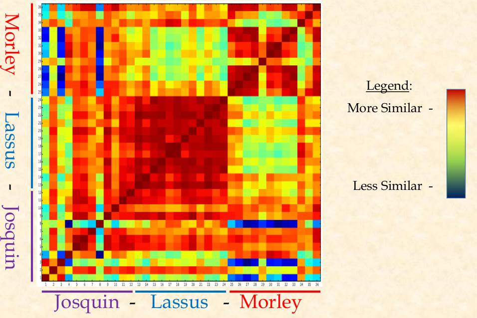
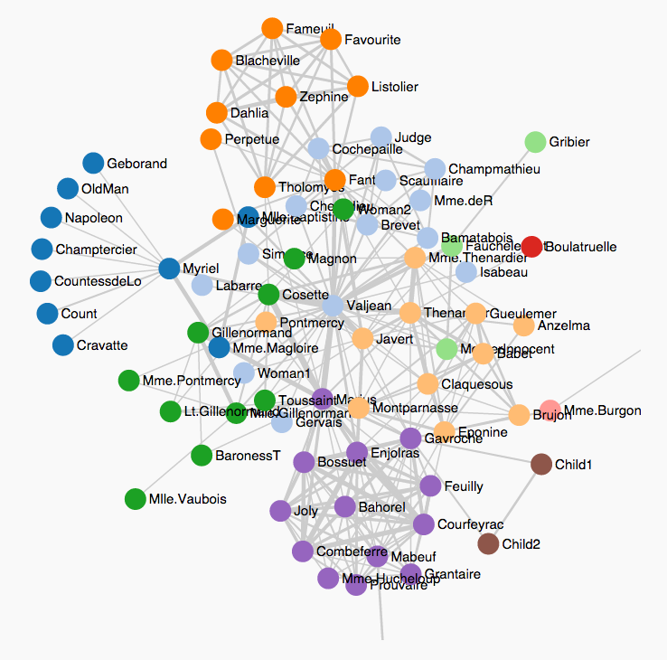
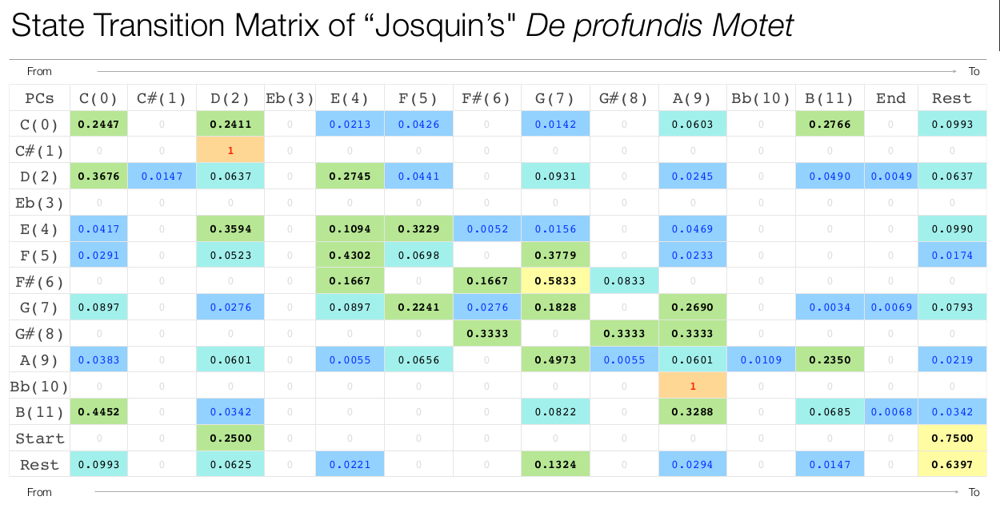
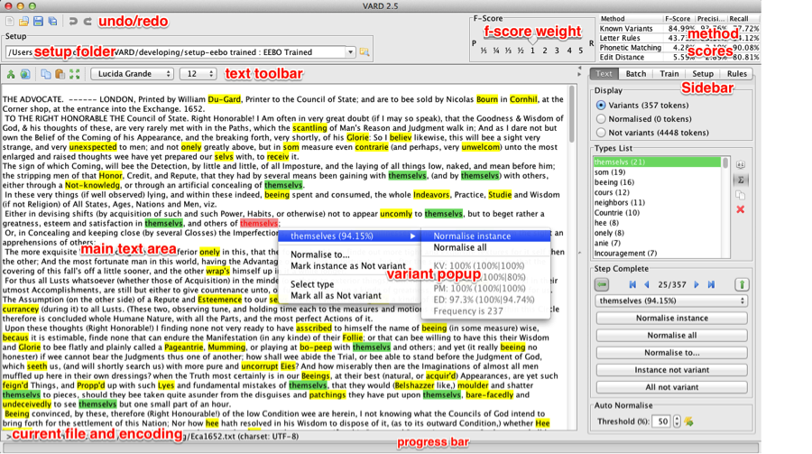

Reanimating Corpora: SIMSSA and DREaM
Posted by ehopkins on November 18, 2015
Last Thursday, SIMSSA participated in the Works in Progress series for McGill Digital Humanities, alongside the DREaM Project. In “Reanimating Corpora: The Single Interface for Music Score Searching and Analysis (SIMSSA) and Distant Reading Early Modernity (DREaM)”, researchers from DREaM and SIMSSA shared some of their latest developments and talked about challenges in common when making decisions about how to organize large corpora, whether written texts or musical scores.
SIMSSA started things off, with an overview of SIMSSA presented by Ichiro Fujinaga, our PI and Content Axis leader. He discussed the process of Optical Music Recognition, and what goes into developing the viewing and searching capacities for the interface we’re working towards.
Next up, Alexander Morgan gave a presentation on “Integral Analysis in VIS.” He talked about clustering composers’ work by comparing the similarity of the intervallic content of their works, demonstrating this technique with a comparison of duets by Josquin, Lassus, and Morley. Below is the heat map view of the duets’ similarities to each other.

The last SIMSSA presentation, from Reiner Krämer, was on “Markov Models and Renaissance Music: Re-examining Four-Voice Motets by Josquin.” Reiner first gave some examples from literature analysis of statistical modelling of texts: Markov’s analysis of consonant and vowel relationships in Pushkin’s Eugene Onegin, and Donald Knuth’s mapping of relationships between characters in Les Misérables in a State Transition Network (STN). Below is the map depicting interactions between characters in Victor Hugo’s novel:

He then talked about how Markov chains and STNs can be used to model any kind of relationship, including those between pitch, rhythm, and other factors that make up music. Reiner showed us the State Transition Matrices, and then networks, that he built based on motets composed by (or at least attributed to) Josquin, mapping the probability of different melodic intervals. Below is the State Transition Matrix, colour-coded to show probability.

The second half of the event featured Stéfan Sinclair and Matt Milner giving us an update on the DREaM Project (Distant Reading Early Modernity). This project is focussed on working with written texts, but there are many parallel concerns in terms of Optical Character Recognition and organizing large corpora.
Stéfan Sinclair talked about the Early Modern Conversions project, as well as working with EEBO (Early English Books Online) . Specifically, he discussed the challenge of searching texts from an era before English spelling was standardized, and the process of spelling normalization. VARD 2 is software designed to help deal with spelling variations. It uses a dictionary to compare spellings and allows words to be tagged with other spellings so that they can be searched for with alternate spellings more readily.

The question of how to capture the process of improvement came up as well – when corrections are made, how do we share the new versions? How do we keep track of when and how edits were made? The DREaM Project (check out their demo video here) is built on a web-based text analysis suite to allow search results to be downloaded and used in Voyant, a web-based reading and analysis environment for digital texts.

Next, Matt Milner spoke from his perspective as a historian about the need to critique our metadata: who decides what is correct? Are we keeping track of corrections as we make them? How trustworthy are assertions about authorship, for example? He also talked about trying to parse information in the publishing details of a text to derive the address. In order to build an appropriate regex for searching a text, decisions must be made about the nature of the object you’re searching for. In this process, there are interesting implications in terms of how we define what an “address” is throughout history.
After, there was a chance to discuss some further questions and common threads between SIMSSA and DREaM. In particular, OCR/OMR progress, procedures for tracking edits to materials as their digitized forms are improved, and better collaborations with libraries and librarians. We also discussed the potential for future collaborations between various Digital Humanities projects at McGill… in the meantime, you should check out some of the other DH projects at McGill and some great Digital Humanities tools.